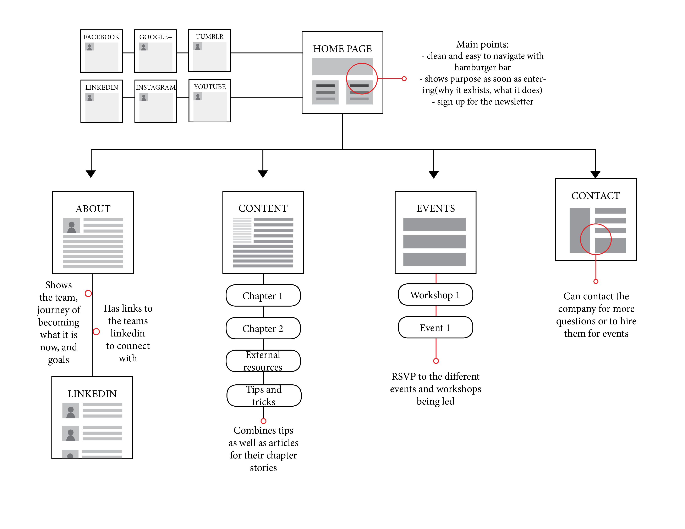

Findings
Through talking with the target audience of YFP, we noticed a few trends that hit all of them. One was the common
fear of losing money due to bad calls or lack of knowledge. Another was that all of them were looking for affirmation
on their investing choices.
Outside of doing research on what the interviewees wanted to see on the website,
we also got them to run through the site and point out how they would use the site.
One of the first headaches was that the website was oriented in a way where getting from point A to point B
was harder than necessary. A lot of the content was unorganized and alongside the
outdated look of the site, rentention rates were quite low. The interviewees did not want
to explore the site and missed out on crucial information that would guide them in their investing journey.
Phase 1: Information architecture
Our first phase was to create a sitemap in order to solve the unorganized
content and navigation problems of the original site. Using this we would identify the flow of the user
and highlight important sections. The trends that we found with the interviewees led us to change how the home
page content was organized as we believed more knowledge could solve a lot of the fears these students had.

Homepage main points: clean and easy to navigate with hamburger bar, shows purpose as soon as entering(why it exhists, what it does), sign up for the newsletter.
About section: shows the team, journey of becoming what it is now, and goals. Has links to the teams linkedin to connect with.
Content section: combines tips as well as articles for their chapter stories.
Events section: RSVP to the different events and workshops being led.
Contact section: Can contact the company for more questions or to hire them for events.
Phase 2: Low-fidelity Wireframing
To start off the design process, each group member made wireframes for what
we wanted the new website to look like. Since we had our sitemap, I designed the
navigation accordingly. My goal was to be able to keep the good content that the website offered but organize it in a way
where the audience could easily navigate the site and find anything they
wanted. To get rid of the outdated and messy feeling of the original site, consistency
was key and so I kept a similar feeling throughout the wireframes while maintaining similar fonts.
 YFP's original homepage
YFP's original homepage
 Our redesigned homepage
Our redesigned homepage